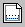

Click the New Design button to start a new bridge design. When you click the button, the Design Project Setup Wizard will be displayed.
The New Design button is located on the Main Toolbar. It can also be accessed from the File menu.